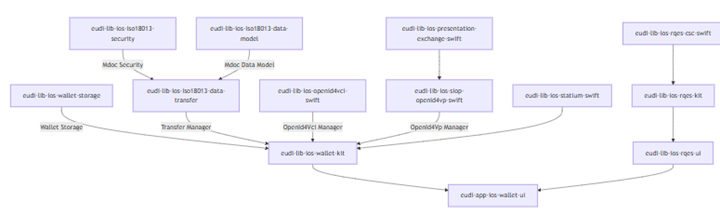

Low-Level design of the EUDI Wallet Reference Implementation
Purpose of this document
The purpose of the Comprehensive Low-Level Design document is to detail the implementation of the high-level design. This document provides a thorough description of individual software components, such as classes, modules, functions, and methods, including their roles, responsibilities, and interactions. It covers the logical architecture, data structures, data processing procedures, and error handling mechanisms. Additionally, the document includes API specifications, integration details, and information on software configuration settings and deployment requirements, supplemented by deployment diagrams illustrating the software's deployment architecture.
Glossary, Acronyms and Reference Documents
This section provides a comprehensive list of the technical terms, abbreviations, or acronyms used throughout this document, along with their definitions or explanations.
Abbreviations and acronyms
| ACRONYM | DEFINITION |
|---|---|
| ARF | Architecture and Reference Framework document [R01] |
| EAA | Electronic Attestation of Attributes |
| EUDI | European Union Digital Identity |
| EUDIW | EUDI Wallet |
| MS | Member State |
| PID | Person Identification Data |
| QEAA | Qualified Electronic Attestation of Attributes |
| VC | Verifiable Credentials |
| W3C | World Wide Web Consortium |
[]{#_Toc212641577 .anchor}Table 1: List of Abbreviations and Acronyms
Definitions
The following definitions are listed to provide clarity on important terms used throughout the document. It shall be noted that the listed definitions are in alignment with the terminology used in [R01] EUDI Architecture and Reference Framework.
| Term | Description |
|---|---|
| PID | A set of data, issued in accordance with Union or national law, enabling the identity of a natural or legal person, or of a natural person representing a natural or legal person, to be established. - eIDAS 2.0. |
| PID Provider | A Member State or legal entity providing Person Identification Data to Users. [R01] |
| Issuer | A Person Identification Data Provider issuing PID or a (Qualified) Trust Service Provider issuing (Q)EAA. In the case of the EUDI Wallet there may be multiple Issuers for PID and (Q)EAA. [R01] |
| Attestation | A set of one or more claims made by an issuer. [VC11] |
| Verifiable Credential | A verifiable credential is a tamper-evident credential that has authorship that can be cryptographically verified. Verifiable attestations can be used to build verifiable presentations, which can also be cryptographically verified. [VC11] |
| Presentation | Data derived from one or more verifiable attestations, issued by one or more issuers, that is shared with a specific verifier. [VC11] |
| Verifiable Presentation | Tamper-evident presentation encoded in such a way that authorship of the data can be trusted after a process of cryptographic verification. Certain types of verifiable presentations might contain data that is synthesized from, but do not contain, the original verifiable attestations (for example, zero-knowledge proofs). [VC11] |
[]{#_Toc212641578 .anchor}Table 2: Definitions
Reference and Applicable Documents
| ID | Document | Version |
|---|---|---|
| R01 | EUDI Architecture and Reference Framework | 2.6.0 |
| VC11 | Verifiable Credentials Data Model | 2.0 |
| HLD | EUDIW High Level Design Document | 2.0 |
| DIF_PEX | DIF Presentation Exchange Specification | 2.0.0 |
[]{#_Toc212641579 .anchor}Table 3: Reference Documents
Introduction
This document provides a detailed design and plan on how the EUDI Wallet will be built, and how it will ensure that the final product meets the intended design specifications.
The context for this document has been set by the Architecture and Reference Framework document (ARF) and the high-level design view by the [EUDI Wallet HLD document](https://github.com/eu-digital-identity-wallet/eudi-doc-reference-implementation-architecture/blob/main/eudi-wallet-hld.md).
The target audience of this document is the community of the EUDI Wallet developers, including the developers of the EUDI Wallet reference implementation. This document, along with the reference implementation, will be part of the deliverables to be shared with the Member States (MS) for supporting the development of their own solutions.
The EUDI Wallet Reference Implementation is built based on the Architecture Reference Framework and aims at showcasing a robust and interoperable platform for digital identification, authentication and electronic signatures based on common standards across the European Union.
This section:
- Translates the high-level architecture and requirements into a detailed and comprehensive design of individual software components, modules, and functions. It focuses on the technical aspects of the software design and provides a blueprint of how the software system will be implemented.
- Defines the detailed specifications of the individual software components, including data structures, algorithms, the interfaces between components, their dependencies, and the error handling and exception handling procedures.
- Considers the constraints and requirements of the software system, such as performance, scalability, and maintainability. It also considers factors such as security, reliability, and robustness.
The use cases in the scope for this document are those defined by the ARF and its annexes.
Reusable Building Blocks
This section presents a set of building blocks and patterns used or to be used by the LLD of the EUDI Wallet components implementing the relevant VC protocols. The current set includes building blocks and patterns classified under the following categories.
Enablers and Facilitators
This section lists the enabling technologies, standards and patterns that collectively constitute a reusable toolbox for specifying, understanding and implementing the protocols in the VC domain.
End-user focused technologies, creative ideas and standards:
- The internet and the capabilities of the browser (e.g.universality, security, redirection, exchanges by value or by reference, post for secrecy, deep links for launching native apps, etc.) as well as the browser usage for security reasons by Native Apps as described by RFC-8252.
- Cryptography, verifiable claims/credentials, Selective Disclosure, Zero Knowledge Proofs, Derived Claims.
- Mobile, other portable devices, micro-devices (IoT).
- Flexible transport layers/protocols (NFC, BLE, WiFi, QR Code, etc.)
- Focused standards (IETF, OpenID and W3C specs, JWT, LD-JWT, VC-JWT, CBOR, etc.).
- Business Drivers for Digitizing Physical Credentials (e.g.security and privacy by default and huge costs savings for society).
- Trusted Execution Environments (TEE) for assuring data confidentiality during processing.
The outstanding enabler for establishing a real trusted operational environment for the VC domain is the Trusted Execution Environment (TEE). The role and the need for the TEE enabler is clearly understood by the community and a lot of work is focused on this direction. This is the core element for enabling a real trusted operational environment. Once TEEs become broadly available on mobiles, the cloud and portables, the impact on the community is expected to be comparable to that of cryptography. TEEs will assure the confidentiality of the data during processing (currently data can remain confidential at rest using encryption and at transit using TLS but not during processing).
Message Exchange Patterns in the Context of VC Protocols
The specifications and the implementations of the VC and identity related protocols are based on message exchanges. The available message exchange patterns include:
- Message exchanges over HTTP (request/response/redirect) on top of various physical and transport layers (TCP/IP, NFC, BLE). Redirects can indirectly deliver a received message from one party to the next (a party responding to a request can redirect to any next), a capability that is critical for the implementation of some VC protocols or use-cases.
- An HTTP response may contain a message, or a URI in which case a second call is required to retrieve the message (indirect message exchange, that is, by reference, not by value).
- QR Codes provides a simple and powerful mechanism for exchanging messages between parties and between networks for proximity flows.
The messages exchanged in the VC domain are typically structured as JSON, include attestations/claims along with their metadata, and are signed and encrypted constructing an opaque token. The data elements included in the exchanges (mandatory and optional) are defined by the relevant case specifications (e.g., PID, mDL, Diploma).
All the messages exchanged in the VC domain are typically encoded, signed and encrypted by the sender and verified by the receiver. Typically, both the sender and the receiver need access to trusted registries for verifying signatures.
VC Relevant Protocols and Specifications
VC Relevant Protocols and Specifications in the scope of this release:
- OAuth2
- OpenID4VP
- DIF Presentation Exchange v2
- SD-JWT
- SD-JWT-VC
- JAR
- JARM
- ISO-18013-5
- [ISO-23220-4](https://www.iso.org/standard/86785.html)
VC Relevant Data Models Specifications
VC Relevant Data Models in the scope of this release:
Security Best Practices
Beyond the trust framework that must be in place for the VC domain, additional measures are required. For this domain, most of the security related concerns/measures should be based-on and refer-to the relevant IETF standards.
Examples of relevant IETF standards are:
- RFC-6819: OAuth 2.0 Threat Model and Security Considerations, January 2013
- RFC-7636: Proof Key for Code Exchange by OAuth Public Clients, September 2015
- RFC-7800: Proof-of-Possession Key Semantics for JSON Web Tokens (JWTs), April 2016
- draft-ietf-oauth-security-topics: OAuth 2.0 Security Best Current Practice.
These IETF standards constitute the baseline on the Security Best Practices since they reflect the status of the internet and hence are based on universal knowledge and experience in this domain. Of course, some security related concerns may additionally require actions from governments and other organizations.
RFC 9396, "OAuth 2.0 Rich Authorization Requests_, Published May 2023" introduces standardized transactions with banks, health centers, etc. using a new authorization details object (in addition to the access and ID tokens). This will lead far beyond the authentication/authorization (which will still be needed of course). The security of such transactions must follow the same approach.
Proposed design approach of EUDI Wallet App Components
The proposed architectural style/pattern for new App Components (not libraries) is the one described by the Hexagonal Architecture, known also as the Ports and Adapters Pattern.
At high level this architecture defines again layers, like the traditional architecture (persistence/domain/presentation), but the layers do not sit one over the other, but one wraps and protects the other:
- environment: initiates some process for a purpose or provides some external functionality (e.g.persistence) to the application.
- adapters: implement a way to exchange data with the application via its ports/interfaces (typically by implementing the exposed ports/interfaces). Adapters that provide input/stimulus are called driving adapters whereas those triggered by the application are called driven adapters (e.g.for persistence)
- ports: the incoming/outgoing or driving/driven interfaces of the application.
- business domain: data models, business rules, services and processes (i.e. use cases) in a particular business context (e.g.verifiable credentials). Data exchanges happen only via ports.
The purpose/emphasis of this architectural style is to make the application's business domain more stable, more easily testable and long-lived. The interactions with the business domain occur only via clearly defined ports/interfaces (actually a universal principle).
For the proposed design approach for Lib Components see section 4.8 Proposed design approach of EUDI Lib Components.
Proposed implementation approach of EUDI Wallet App Components
As an example, the App Component https://github.com/eu-digital-identity-wallet/eudi-srv-web-verifier-endpoint-23220-4-kt uses Spring Boot with WebFlux which simplifies building reactive Restful web services.
The implementation of the referenced application shows the above simplification statement and therefore, the same approach is proposed for the implementation of all new App Components that need reactive Restful web services (practically all for the VC domain).
For low-end devices (e.g.for IoT) the above approach could be used for building a prototype for the App Component. The actual App Component could keep only the essential parts or use the Vert-x library or be re-implemented under the guidance of the prototype.
Proposed design approach of EUDI Lib Components
The hexagonal architectural style described by the previous two sections for App Components makes little sense for library components. Libraries provide functions implementing simple or complex algorithms.
The App Components implement use cases and hence also any flow activities and processes. Thanks to the asynchronous reactive frameworks/libs described by the previous sections, the implementation of flows/processes has been simplified.
The libraries are responsible for implementing the functions used by the App Components. Libraries, or library partitions/packages, are typically structured within two layers:
- A Library API layer describing the function definitions and the data model used by these function definitions;
- An internal implementation layer that implements the algorithms and any additional data elements used by the internal function definitions.
The algorithms to be implemented by the libraries in the VC domain are/must-have-been specified by approved standards/specifications. These standards/specifications include the difficult part of the design. Any remaining design activities depend on the type of algorithm to be implemented. Identifying and factoring out into a shared library reusable patterns and approaches is one. Approaches for improving performance is a second.
It is proposed to factor out from App Components any non-flow and non-trivial functions into libraries. There are benefits (e.g.separation of concerns, potential for re-usability, improved understandability) even if a library is used originally by only one App Component.
For conceptual integrity each library must solve/simplify a cohesive set of problems in a semantic context. Hence, the proposal is one library per semantic context.
EUDI Wallet Components LLD
The LLD of each component will be described in this chapter. Please note that the naming convention used for the EUDI Wallet Components is documented by the [architecture decision record, ADR-11](https://github.com/eu-digital-identity-wallet/eudi-doc-reference-implementation-architecture/blob/main/decisions/0011-library-naming-conventions.md).
In this section an initial view of each component directly from its developers is provided. The reader may also find links to the GitHub repositories in the following section where additional detailed information for each module can be found.
EUDI Wallet Core (Android) and Wallet Kit (iOS) Libraries
The EUDI Wallet Core (Android) and Wallet Kit (iOS) Coordinator Libraries constitute an integral element within the Wallet Coordinator Component, as detailed in the High-Level Architecture documentation. The library serves the purpose of:
| Feature | Coverage |
|---|---|
| Document management | |
| Documents' Key creation and management with Android Keystore by default | |
| Support for custom SecureArea implementations | |
| Support for multiple SecureArea implementations | |
| Support for multiple credentials for the same document | |
| Document issuance | |
| Support forOpenId4VCI (draft 15)document issuance | |
| Authorization Code Flow | |
| Pre-authorization Code Flow | |
| Support for mso_mdoc format | |
| Support for sd-jwt-vc format | |
| Support credential offer | |
| Support for DPoP JWT in authorization | |
| Support for JWT proof types | |
| Support for deferred issuing | |
| Support for batch issuing | |
| Proximity document presentation | |
| Support for ISO-18013-5 device retrieval | |
| QR device engagement | |
| NFC device engagement | |
| BLE data transfer | |
| NFC data transfer | |
| Wifi-Aware data transfer | |
| Remote document presentation | |
| OpenId4VP (draft 24)document transfer | |
| ClienID scheme: preregistered, x509_san_uri, x509_san_dns, redirect_uri | |
| PresentationDefinition, DCQL |
The EUDI Wallet Core (Android) and Wallet Kit (iOS) Coordinator Libraries serve as a coordinator layer between the UI app and the Wallet libraries. Currently, coordinates issuing, proximity and remote presentation libraries. The library is a part of the EUDI Wallet Reference Implementation project.
The initial implementation provides Proximity and Remote Flows for the EUDI Wallet. It is based on the following specifications:
- ISO/IEC 18013-5 -- Published
- Presentation Exchange v2.0.0 - Published
- OpenID4VP -- Draft 24
- ISO 18013-7 - Draft
- SIOPv2 -- Draft
The primary programming languages employed for the development of the libraries are Native Kotlin for Android and native Swift for iOS (as specified in the ADR decisions, namely ADR-0004 and ADR-0005).
The latest Wallet core and Wallet kit release also include a logger method that allows one to specify the logger. If the logger is not provided, the default logger will be used. It is also possible to set logLevels.
Proximity Sharing Libraries
The EUDI ISO/IEC 18013-5 Data Transfer Library is mainly part of the [Proximity Presentation Service](https://github.com/eu-digital-identity-wallet/eudi-doc-reference-implementation-architecture/blob/main/eudi-wallet-hld.md#67-proximity-presentation-service) component, as detailed in the High-Level Architecture documentation, but also covers a part of the remote presentation through RestAPI.
This library provides a set of classes to manage the transfer of documents in an EUDI ISO/IEC 18013-5 Wallet.
The library supports the following devices engagement methods for proximity presentation:
- QR code
- NFC tag (Android)
and the Reverse engagement with app link for the remote presentation.
Data transfer of the documents is done using BLE (Bluetooth low energy) for the proximity case and via HTTP protocol for the remote case.
Additionally, Transfer Manager incorporates reader authentication, ensuring the trustworthiness of the verifier (reader) device.
Reader authentication is accomplished by verifying the following:
- Certificate path validation: Verifying the certificate path from the device's certificate to a trusted root certificate
- Certificate's profile validation: Examines the attributes and constraints defined in the certificate profile to ensure that they meet the predefined criteria for a trusted certificate
- CRL validation: Checking the Certificate Revocation List to verify that the certificate has not been revoked or compromised.
The above verification tasks can be accomplished by the Trust Management Libraries.
Remote Presentation Libraries
EUDI SIOPv2 OpenId4VP Library
The EUDI SIOPv2 OpenId4VP Library is part of the [Remote Presentation Service](https://github.com/eu-digital-identity-wallet/eudi-doc-reference-implementation-architecture/blob/main/eudi-wallet-hld.md#68-remote-presentation-service) component, as detailed in the High-Level Architecture documentation.
The library supports OpenId4VP (draft 24) protocols. In particular, the library focuses on the wallet's role using those two protocols with the profile constraints included in ISO 23220-4 and ISO-18013-7.
This library depends on
eudi``-lib-``jvm``-presentation-exchange-kt.
For the exchanges the library uses the interfaces of Self Issued OpenID Provider v2 (SIOPv2 - draft 13). SIOPv2 remains the only method currently available for exchanges. There are no alternative approaches currently. Should a new method become available in the future, an update will be provided accordingly.
Presentation Exchange Library
The Presentation Exchange Library (eudi-lib-jvm-presentation-exchange-kt) implements the functionality described by the DIF Presentation Exchange v2 specification DIF_PEX.
The [DIF_PEX] spec defines a generic and flexible Json based API for requesting and receiving claims. Overall, the [DIF_PEX] spec defines a concrete approach that enables Verifiers to describe proof requirements (in their Presentation Definition requests), and Holders to provide submissions of proof (in their Presentation Submission responses) that are aligned with the respective requirements submitted by the Verifiers. The acceptance decision is on the verifiers.
The OpenID4VP (https://openid.net/specs/openid-4-verifiable-presentations-1_0-24.htmlhttps://openid.net/specs/openid-4-verifiable-presentations-1_0.html) protocol relies on [DIF_PEX] for constructing the VC presentation requests and responses.
The [DIF_PEX] specification defines the Json Schema of the exchanges and their parts:
- presentation-definition.json
- presentation-definition-envelope.json
- input-descriptor.json
- submission-requirements.json (array of submission-requirements.json)
- presentation-submission.json
EUDI SD-JWT library
This library implements SD-JWTdraft12. Use cases supported:
- Issuance: As an Issuer use the library to issue a SD-JWT (in Combined Issuance Format)
- Holder Verification: As Holder verify a SD-JWT (in Combined Issuance Format) issued by an Issuer
- Presentation Verification: As a Verifier verify SD-JWT in Combined Presentation Format or in Envelope Format
- Recreate initial claims: Given a SD-JWT recreate the original claims
EUDI Wallet Data Storage and Cryptographic Management Libraries
The EUDI Document Management library is part of the [Cryptographic Management and Data Storage Services](https://github.com/eu-digital-identity-wallet/eudi-doc-reference-implementation-architecture/blob/main/eudi-wallet-hld.md#69-cryptographic-management-and-data-storage-services). This library provides a set of classes to manage documents in an EUDI Wallet.
As defined in the EUDIW High Level Design document, the Secure Cryptographic Interface (SCI), which is a Programmable interface used to manage cryptographic assets and functions and serves the communication between the Cryptographic Keys Management System Service and the Wallet Coordinator (part of the Cryptographic Management and Data Storage Services component), is enabled through the new wallet core and kit built-in components are:
- KeystoreSecureArea for storing and managing the documents' keys
- StorageEngine for storing the documents' data
Creating a new document requires the document format and the create key
settings. The create key settings can be used to specify the way the
keys are created.
When using the built-in KeystoreSecureArea implementation of the
library, the wallet, getDefaultCreateDocumentSettings() extension can be
used to create an instance of the appropriate CreateDocumentSettings
class.
After the document is created, the user must retrieve the document's
data from the issuer and store it in the wallet using the
storeIssuedDocument method.
For the Android Implementation: It defines the interfaces for DocumentManager and Document classes and provides a default standard implementation of the DocumentManager interface using Android Identity Credential API. It also provides a sample implementation of the DocumentManager interface that can be used to load sample documents and test the library. It supports:
- Use of AndroidKeyStore for generating documents' keys
- Use of Android StrongBox for storing private/public keys
- Storage encryption for documents
For the iOS Implementation: It provides keychain storage for wallet documents.
Currently, Elliptic Curve P-256 is supported for document keys. Support for secure enclave storage is also included.
The libraries include also an interface to extend and build upon in order to store documents to external storage cards, UICC, or other secure storage.
EUDI Verifier Endpoint
The EUDI Verifier Endpoint is a Web application (Backend Restful service) that acts as a Verifier/RP trusted end-point.
For the presentation request and response submission it uses the Presentation Exchange Library. This component has been designed following the hexagonal architectural style (i.e.ports and adapters) and uses the Spring WebFlux framework for its implementation.
This is a Web application (Backend Restful service) that acts as a Verifier/RP trusted end-point. This backend service is accompanied by a Web UI application implemented here.
In the GitHub section Run all verifier components together a developer may see how to boot both applications together.
Application exposes two APIs
The Verifier API, supports two operations:
- Initialize Transaction, where Verifier may define whether it wants to request a SIOP or OpenID4VP or combined request
- Get Wallet response, where Verifier receives depending on the request an id_token, vp_token, or an error
An Open API v3 specification of these operations is available here. Currently, there is an Open API v3 specification available only for the verifier logs.
The Wallet API, provides the following main operations
- Get Request Object according JWT Secured Authorization Request
- Get Presentation Definition according to OpenId4VP in case of using presentation_definition_uri
- Direct Post according to OpenID4VP direct_post
Please note that
- Both APIs need to be exposed over HTTPS.
- Verifier API needs to be protected to allow only authorized access.
Both of those concerns have not been tackled by the current version of the application, since in current version it is merely a development tool, rather a production application.
Additionally, the verifier supports event logging for testing purposes. The log of events that occurred throughout the whole process. The transaction_idis an identifier assigned to each Transaction(result of calling theinitialization endpoint) and it is used in theVerifierApirelated endpoints.
Developers can also check the source-code for the details. The library is implemented in Kotlin and includes examples that help understanding the process.
EUDI Android Holder - Verifier Demo Applications
The Verifier is a Web application (Backend Restful service) that allows triggering and managing the presentation use case (cross device, remote presentation scenario).
Figure 1: OpenID4VP Verifier
The purpose of this repository is to demo the flow of communication between a verifier mobile application and a wallet mobile application as depicted in ISO 23220-4, Appendix B. Towards this purpose two applications are built in the context of this repository: a Verifier android application and, a Wallet/Holder android application.
The Verifier application acts as a user agent that integrates with a web backend service implemented in eudi-srv-web-verifier-endpoint. The Verifier mobile application is used to initialize an authentication request and pass it to the Wallet/Holder android application. The wallet application integrates with verifier's backend web service to retrieve any additional data and finally posts the response with the generated payload. The wallet's response is displayed on the verifier's mobile application screen.
The integration of the two apps is based on eudi-lib-jvm-siop-openid4vp-kt library that implements the OpenID4VP / SIOP v2 authentication protocols.
EUDI Issuing Library
The EUDI Issuing Library (OpenId4VCI) is part of the [Issuance Service](https://github.com/eu-digital-identity-wallet/eudi-doc-reference-implementation-architecture/blob/main/eudi-wallet-hld.md#64-issuance-service) and the [Signature/Seal Service](https://github.com/eu-digital-identity-wallet/eudi-doc-reference-implementation-architecture/blob/main/eudi-wallet-hld.md#65-signatureseal-service) component, as detailed in the High-Level Architecture documentation.
The Android and iOS libraries support the OpenId4VCI (draft 15) protocol. In particular, the library focuses on the wallet's role in the protocol to:
- Resolve credential issuer metadata
- Resolve metadata of the authorization server protecting issuance services
- Resolve a credential offer presented by an issuer service
- Negotiate authorization of a credential issuance request
- Submit a credential issuance request
The issuing library underwent testing with internal test issuers in the organization.
The EUDI Wallet Issuer is available online in https://issuer.eudiw.dev/ and the EUDI Wallet Tester Issuer is available in https://tester.issuer.eudiw.dev/.
The EUDIW Issuer is an implementation of the PID and (Q)EAA Provider service. This service is currently undergoing a transition from OpenId4VCI draft 13 to draft 15 of the specification. The table below shows which components support which draft version.
| Feature | Coverage |
|---|---|
| [Authorization Code flow draft]{.underline} | Support for credential configuration id, scope, (draft 13) |
| [Pre-authorized code flow]{.underline} | (draft 13) |
| [Credential Offer]{.underline} | authorization_code , pre-authorized_code (draft 13) |
| Dynamic Credential Request | (draft 13) |
| mso_mdoc format | |
| SD-JWT-VC format | |
| W3C VC DM | |
| [Token Endpoint]{.underline} | (draft 13) |
| [Credential Endpoint]{.underline} | Including proofs and repeatable invocations, (draft 15) |
| Credential Issuer MetaData | Unsigned metadata, (draft 15) |
| [Nonce endpoint]{.underline} | (draft 15) |
| [Deferred Endpoint]{.underline} | (draft 15) |
| Proof | JWT |
| Credential response encryption | (draft 15) |
| [Notification Endpoint]{.underline} | |
| Pushed authorization request | |
| Wallet authentication | public client |
| Demonstrating Proof of Possession (DPoP) | |
| PKCE |
Additionally, the PID Issuer is an implementation of of a credential issuing service, according to OpenId4VCI - draft15, with the following coverage:
| Feature | Coverage |
|---|---|
| Authorization Code flow | Using a suitable OAuth 2.0 server |
| Pre-authorized code flow | |
| mso_mdoc format | |
| SD-JWT-VC format | Except revocation list & meta |
| W3C VC DM | |
| Credential Offer | authorization_code , pre-authorized_code |
| [Credential Endpoint]{.underline} | Yes, including multiple proofs, encryption, repeatable invocations |
| [Credential Issuer MetaData]{.underline} | Yes, using scopes, and signed_metadata |
| Deferred Endpoint | |
| Nonce Endpoint | |
| Notification Endpoint | |
| Proof | JWT (jwk, x5c, did:key, did:jwk) - Except Key Attestation |
| Data Integrity Proof | |
| Key Attestation |
rQES[^1]
Trust Provider Signer: authenticating and authorizing using Remote Presentation protocol
TrustProvider Signer is a remote signing service provider and client using authentication based on remote presentation by OpenId4VP.
Currently, it includes the following features:
- Create an Account: Allows users to create new accounts within the program.
- Authentication using OpenId4VP: Enables authentication through OpenId4VP.
- Create Certificates: Enables authenticated users to create new certificates and their associated key pairs.
- Sign Documents: Allows an authenticated user to digitally sign documents.
rQES: Wallet Driven Signing
EUDIW Wallet driven rQES is available for the EUDI Wallet ecosystem. A long set of reusable modules and libraries have been implemented and are available to enable the end-user to start a signing from inside of his EUDI Wallet instance. UI components are available to enable this as well as an SDK for rQES libraries specifically as a coordinating module namely the Wallet core (Android) and Wallet kit (iOS). Furthermore, both low level libraries are available for rQES management on the side of the EUDI Wallet and for the rQES services that are running on the server side.
rQES: Server initiated signing integrated
Server based initiated signing will be also enabled pushing/requesting signing authorization from the EUDI Wallet.
Wallet Apps and UIs
There are EUDI Wallet apps available for Android and iOS. The apps consume the SDK called EUDIW Wallet core Wallet core and Wallet kit for Android and iOS respectively. A list of available libraries to facilitate remote presentation, proximity, and issuing test/demo functionality following specification of the ARF include ARF protocols and details are depicted in the main readme of the repositories. Currently they include:
- OpenID4VP - draft 24 (remote presentation), presentation exchange v2.0,
- ISO18013-5 (proximity presentation),
- OpenID4VCI draft 15(issuing)
- Document Signing using OpenID4VP
The application allows the configuration of multiple analytics providers. You can configure the following:
- Initializing the provider (e.g. Firebase, Appcenter, etc...)
- Screen logging
- Event logging
The apps are end to end compatible to be used with online issuer (issuer.eudiw.dev), verifier service (verifier.eudiw.dev), signing service and verifier app for Android.
Relying Party Registration Service
The Relying Party Registration Service provides two main functionalities:
- Register a new Relying Party, issuing the Relying Party Instance certificate and keypair in pkcs#12 (P12) format.
- List the certificates issued and enable their revocation.
List of Repositories
EUDI Wallet Libraries in GitHub
Wallet Core (Android) and Wallet Kit (iOS) Coordinator Libraries
| Repository | Description |
|---|---|
| Wallet Core (Android) | Implementation of the EUDI Wallet Core library for Android that serves as a coordinator layer between the UI app and the Wallet libraries. Currently, coordinates issuing, proximity and remote presentation libraries. |
| Wallet Kit (iOS) | Implementation of the EUDI Wallet Kit library for iOS that serves as a coordinator layer between the UI app and the Wallet libraries. Currently coordinates issuing, proximity and remote presentation libraries. |
Visual representations of iOS and Android libraries are showcased, providing insights into their interconnections. These graphics offer a comprehensive overview of the libraries' structure and composition. For additional exploration and access to in-depth documentation, links to the repositories are included in the tables below.
Figure 2: Android Wallet Core Libraries Graph

Figure 3: iOS Wallet Kit Libraries Graph
Proximity Sharing iOS Libraries
| Repository | Description |
|---|---|
| mDoc Security (iOS) | Implementation of mDoc security mechanisms according to ISO/IEC 18013-5. |
| mDoc Data Transfer (iOS) | Implementation of the mDoc data-transfer library according to ISO/IEC 18013-5. |
| mDoc Data Model (iOS) | Implementation of the mDoc data-model according to ISO/IEC 18013-5. |
Proximity Sharing Android Libraries
| Repository | Description |
|---|---|
| mDoc Data Transfer (Android) | This library provides a set of classes to manage the transfer of documents in an EUDI ISO 18013-5 Android Wallet. |
Remote Presentation iOS Libraries
| Repository | Description |
|---|---|
| Presentation Exchange (iOS) | Implementation of DIF Presentation Exchange v2 specification in Swift. |
| SIOPv2 & OpenID4VP protocols (iOS) | Implementation of SIOPv2 and OpenID4VP (draft 24) protocols (wallet's role) in Swift. |
| SD-JWT (iOS) | SD-JWT library for creating and verifying SD-JWT in JVM Swift. |
Remote Presentation Android Libraries
| Repository | Description |
|---|---|
| Presentation Exchange (Android) | Implementation of DIF Presentation Exchange v2 specification in Kotlin. |
| SIOPv2 & OpenID4VP protocols (Android) | Implementation of SIOPv2 and OpenID4VP (draft 24) protocols (wallet's role) in Kotlin. |
| SD-JWT (Android) | SD-JWT library for creating and verifying SD-JWT in JVM Kotlin. |
Issuing iOS Libraries
| Repository | Description |
|---|---|
| OpenId4VCI (iOS) | Implementation of credential management supporting the OpenId4VCI (draft 15) protocol. |
Issuing Android Libraries
| Repository | Description |
|---|---|
| OpenId4VCI (Android) | Implementation of credential management supporting the OpenId4VCI (draft 15) protocol. |
EUDI Wallet Tester for Issuer
| Repository | Description |
|---|---|
| EUDI Wallet Tester for Issuer | The EUDIW Wallet Tester (for Issuer) allows to test the OID4VCI (draft 13) flow with an Issuer, in a Web GUI. |
Trust List Provider
| Repository | Description |
|---|---|
| Trust List Provider | A Trusted List Provider (TLP) is a body responsible for maintaining, managing, and publishing a Trusted List. |
PoDoFo
| Repository | Description |
|---|---|
| PoDoFo | PoDoFo is a free portable C++ library to work with the PDF file format. |
Wallet Data Storage and Cryptographic Management iOS Libraries
| Repository | Description |
|---|---|
| mDoc Document Storage (iOS) | Storage for keys and wallet documents |
Wallet Data Storage and Cryptographic Management Android Libraries
| Repository | Description |
|---|---|
| mDoc Document Storage (Android) | This library provides a set of classes to manage documents and their cryptographic keys in an EUDI Android Wallet. |
Wallet Trust Management Android Libraries
| Repository | Description |
|---|---|
| Trust Manager (Android) | This library provides functionality for validation of certificate paths, digital signatures, digest values, DocType consistency, and the ValidityInfo structure. |
Token Status List Specification for Android
| Repository | Description |
|---|---|
| Statium Android | A library for checking the status of a credential in Kotlin multiplatform, supporting Token Status List specification |
Token Status List Specification for iOS
| Repository | Description |
|---|---|
| https://github.com/eu-digital-identity-wallet/eudi-lib-kmp-statiumStatium iOS | A library for checking the status of a credential in swift, supporting Token Status List specification |
Wallet UI App and demo App for Android and iOS
| Repository | Description |
|---|---|
| UI / Demo App (Android) | Implementation of wallet UI app for Android. Currently, it also includes Demo App, demonstrating the following capabilities: Proximity presentation, Remote Presentation and issuing of PID and mDL. |
| UI / Demo App (iOS) | Implementation of wallet UI app for iOS. Currently, it also includes Demo App, demonstrating the following capabilities: Proximity presentation, and Remote Presentation and issuing of PID and mDL. |
Verifier Apps and Services
| Repository | Description |
|---|---|
| Web Verifier | Demo Web Verifier UI application (Frontend) that acts as a Verifier/RP trusted end-point. Available at https://verifier.eudiw.dev |
| Restful API (web-services) | Demo Web Verifier application (Backend Restful service) that acts as a Verifier/RP trusted end-point. Available at https://verifier-backend.eudiw.dev |
| EUDI Verifier Core (Android) | EUDI Core Verifier SDK for Android that provides the resources to develop an application to verify an mDoc according to the ISO 18013-5 standard. |
Issuing Apps and Services
| Repository | Description |
|---|---|
| OpenId4VCI issuer (Python) | An implementation of a credential issuing service, according to OpenId4VCI (draft 15), in Python. Available at https://issuer.eudiw.dev/ |
| OpenId4VCI issuer (Kotlin) | An implementation of a credential issuing service, according to OpenId4VCI (draft 15), in JVM Kotlin. Available at https://issuer-backend.eudiw.dev/ |
| Attestation Status List and Attestation Revocation List (Python) | Python library designed to issue and manage revocation status using Attestation Status Lists and Attestation Revocation Lists. |
rQES: Remote Electronic Signing Application
| Repository | Description |
|---|---|
| Web Trusted Signer Provider | TrustProvider Signer is a remote signing service provider and client. The trustprovider signer can be accessed using the EUDI Wallet through OID4VP presentation of the PID. Available at https://trustprovider.signer.eudiw.dev/ |
| EUDI Wallet driven signer QTSP | Implementation of a wallet-driven and rp-centric QTSP for the remote Qualified Electronic Signature component of the EUDI Wallet. The QTSP provides endpoints based on the CSC API v2.0 specification and supports authentication via OpenID4VP. |
| EUDI Wallet-driven external SCA | Implementation of a wallet-driven SCA for the remote Qualified Electronic Signature component of the EUDI Wallet. The SCA provides endpoints that allow to calculate the hash value of a document and obtain the signed document given the signature value. Available at https://walletcentric.signer.eudiw.dev/ |
| EUDI Wallet-driven rQES web tester | A Wallet Tester Web Service for the Wallet-Driven release of the remote Qualified Electronic Signature (rQES) component. |
| Centric rQES SCA | A REST API server implementing the RP-centric SCA for the remote Qualified Electronic Signature (rQES) component of the EUDI Wallet. |
| rQES RI -- RP centric -- Relying Party test site | A Relying Party (RP) Web Service for the RP-centric release of the remote Qualified Electronic Signature (rQES) component. |
| EUDI Wallet-driven Relying Party | Implementation of Relying Party (RP) Web Service for the Wallet-driven release of the remote Qualified Electronic Signature (rQES) component. |
{#section-1 .unnumbered}
rQES: Low Level Libraries
| Repository | Description |
|---|---|
| EUDI rQES CSC library (Kotlin) | This is a Kotlin library, targeting JVM, that supports theCloud Signature Consortium API (version 2)protocol. |
| EUDI rQES CSC library (Swift) | This is a Swift library, targeting JVM, that supports theCloud Signature Consortium API (version 2)protocol. |
rQES: Core and Kit Libraries
| Repository | Description |
|---|---|
| EUDI Remote Qualified Electronic Signature (RQES) Core library for Android | This module provides the core functionality for the EUDI Wallet for Android, focusing on the Remote Qualified Electronic Signature (RQES) service. |
| EUDI Remote Qualified Electronic Signature (RQES) Kit library for iOS | This module provides the core functionality for the EUDI Wallet for iOS, focusing on the Remote Qualified Electronic Signature (RQES) service. |
rQES: UI Libraries
| Repository | Description |
|---|---|
| EUDI Remote Qualified Electronic Signature (RQES) UI library for Android | This module provides the core and UI functionality for the EUDI Wallet for Android implementation, focusing on the Remote Qualified Electronic Signature (RQES) service. |
| EUDI Remote Qualified Electronic Signature (RQES) UI library for iOS | This package provides the core and UI functionality for the EUDI Wallet for iOS implementation, focusing on the Remote Qualified Electronic Signature (RQES) service. |
Relying Party Registration Service
| Repository | Description |
|---|---|
| Relying Party registration service | The Relying Party Registration Service registers Relying Parties, issuing certificates and keypairs for authentication with Wallet Instances. It also manages issued certificates, including listing and revocation. Demo Web Relying Party Registration to register a new Relying Party, available at https://registry.serviceproviders.eudiw.dev and Tester Relying Party, available at https://tester.relyingparty.eudiw.dev. |
Disclaimer
The released software is a development release version:
- The initial development release is an early endeavor reflecting the efforts of a short timeboxed period, and by no means can be considered as the final product.
- The initial development release may be changed substantially over time, might introduce new features but also may change or remove existing ones, potentially breaking compatibility with your existing code.
- The initial development release is limited in functional scope.
- The initial development release may contain errors or design flaws and other problems that could cause system or other failures and data loss.
- The initial development release has reduced security, privacy, availability, and reliability standards relative to future releases. This could make the software slower, less reliable, or more vulnerable to attacks than mature software.
- The initial development release is not yet comprehensively documented.
- Users of the software must perform sufficient engineering and additional testing in order to properly evaluate their application and determine whether any of the open-sourced components is suitable for use in that application.
- We strongly recommend not putting this version of the software into production use.
- Only the latest version of the software will be supported
License
Libraries License
All libraries are subject to the Apache License, Version 2.0.
Copyright © 2023 European Commission
*Licensed under the Apache License, Version 2.0 (the "License");
you may not use this file except in compliance with the License.
You may obtain a copy of the License at
http://www.apache.org/licenses/LICENSE-2.0
Unless required by applicable law or agreed to in writing, software distributed under the License is distributed on an "AS IS" BASIS, WITHOUT WARRANTIES OR CONDITIONS OF ANY KIND, either express or implied. See the License for the specific language governing permissions and limitations under the License.*
Reference Applications License
All the reference applications are subject to the EUPL, Version 1.2.
Copyright © 2023 European Commission
Licensed under the EUPL, Version 1.2 or - as soon they will be approved by the European Commission - subsequent versions of the EUPL (the "Licence"); You may not use this work except in compliance with the Licence.
You may obtain a copy of the Licence at:
https://joinup.ec.europa.eu/software/page/eupl
Unless required by applicable law or agreed to in writing, software distributed under the Licence is distributed on an "AS IS" basis, WITHOUT WARRANTIES OR CONDITIONS OF ANY KIND, either express or implied. See the Licence for the specific language governing permissions and limitations under the Licence.